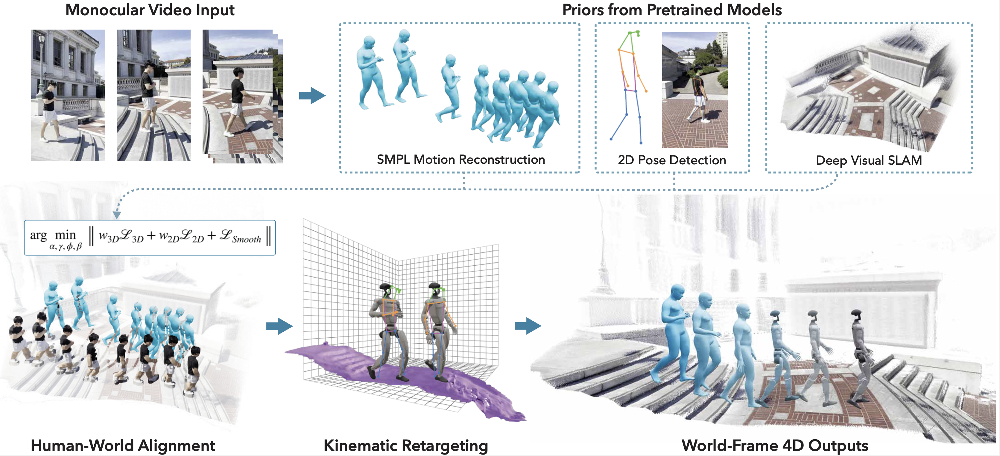
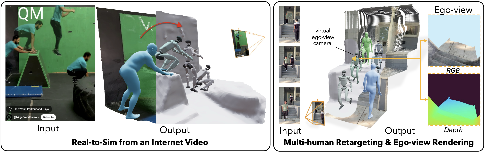
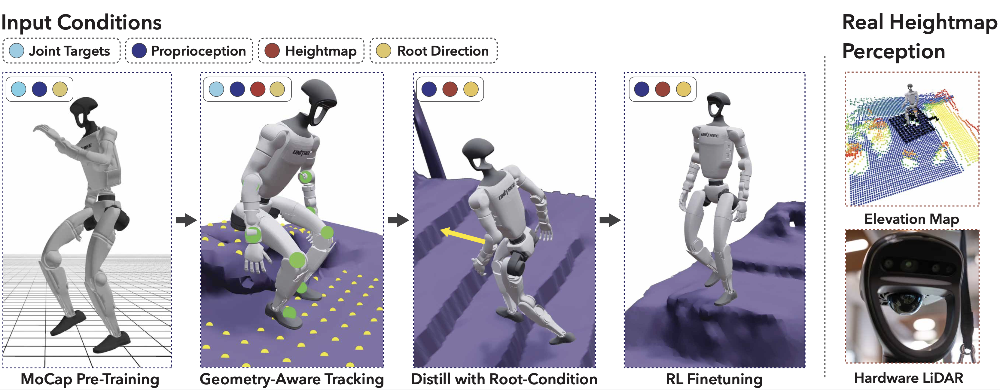

VideoMimic
Visual imitation enables contextual humanoid control
VideoMimic is a real-to-sim-to-real pipeline that converts monocular videos into transferable humanoid skills, letting robots learn context-aware behaviors (terrain-traversing, climbing, sitting) in a single policy.
Abstract.
How can we teach humanoids to climb staircases and sit on chairs using the surrounding environment context? Arguably, the simplest way is to just show them—casually capture a human motion video and feed it to humanoids.
We introduce VideoMimic, a real-to-sim-to-real pipeline that mines everyday videos, jointly reconstructs the humans and the environment, and produces whole-body control policies for humanoid robots that perform the corresponding skills.
We demonstrate the results of our pipeline on real humanoid robots, showing robust, repeatable contextual control such as staircase ascents and descents, sitting and standing from chairs and benches, as well as other dynamic whole-body skills—all from a single policy, conditioned on the environment and global root commands.
We hope our data and approach help enable a scalable path towards teaching humanoids to operate in diverse real-world environments.
Real to Sim.

Figure 1: The Real-to-Sim pipeline reconstructs human motion and scene geometry from video, outputting simulator-ready data.
Figure 2: Versatile capabilities include handling internet videos, multi-human reconstruction, and ego-view rendering.
Training in Sim.

Figure 3: Policy training pipeline in simulation, progressing from MoCap pre-training to geometry-aware tracking and distillation.
Deploy in Real.